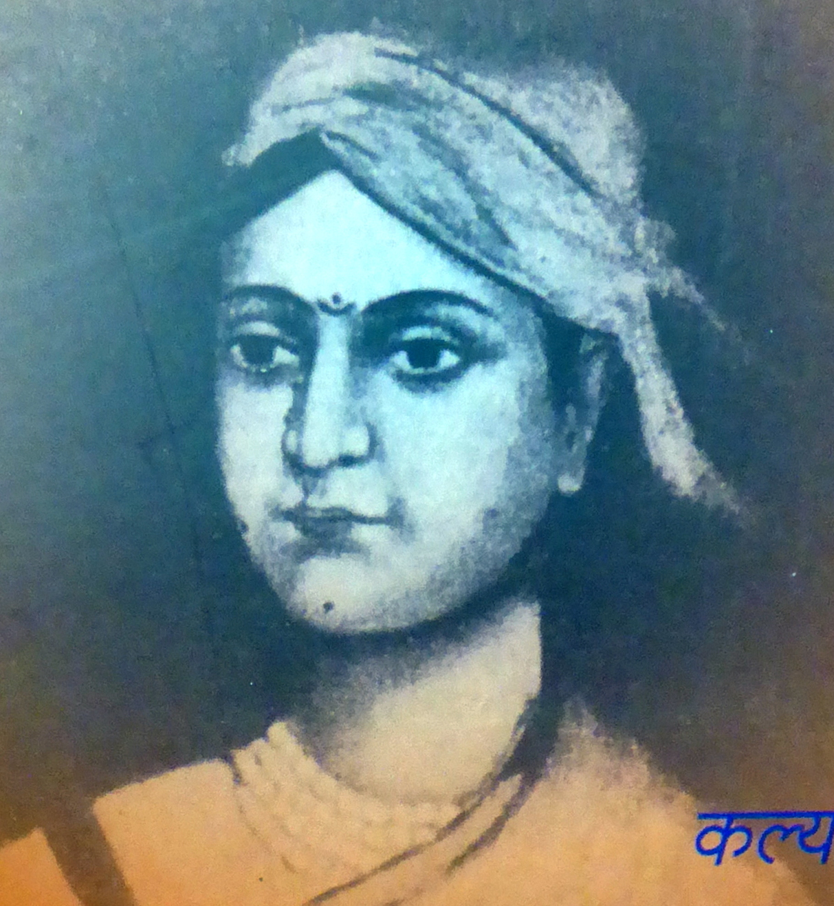
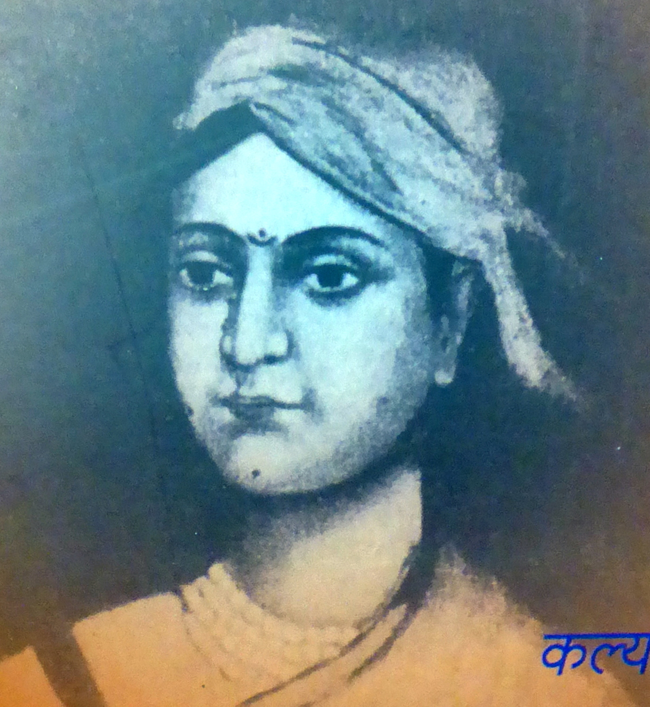

|
Bibliography of South Asian Titles 2016 December Worldcat lists these titles at https://www.worldcat.org/profiles/uvalibrary/lists/3706187 |
 |
|
|
Bibliography of South Asian Titles 2016 December Worldcat lists these titles at https://www.worldcat.org/profiles/uvalibrary/lists/3706187 |
 |
| 1. My two souths : blending the flavors of India into a southern kitchen.Author, etc. Gomez, Asha,, Foose,Martha Hall. 2016.
http://www.worldcat.org/oclc/945232434 | |
| 2. Making sense of Modi's India.Author, etc. Desai, Meghnad. 2016.
http://www.worldcat.org/oclc/945730398 | |
 |
3. Sati : Evangelicals, Baptist missionaries, and the changing colonial discourse.Author, etc. Jain, Meenakshi. 2016. Lord Bentinck's Regulation XVII of 1829, which declared sati a criminal offence, marked the culmination of a sustained campaign against Hinduism by British Evangelicals and missionaries anxious to Anglicize and Christianize India. http://www.worldcat.org/oclc/948588265 |
| 4. A history of the Tibetan empire : drawn from the Dunhuang manuscripts.Author, etc. Dkon-mchog-bstan-?dzin-?phrin-las-lhun-?grub,,Sron?-btsan Dpe-mdzod-khan?. 2015.
http://www.worldcat.org/oclc/927104333 | |
| 5. Buddhist texts and traditions : selected papers, International Conference on Buddhist Texts and Traditions, 21-23 December 2009 : organized by Department of Pali, Savitribai Phule Pune University, Pune, Nava Nalanda Mahavihara, Nalanda and Central University of Tibetan Studies, Sarnath, Varanasi.Author, etc. International Conference on Buddhist Texts and Traditions, Deokar, Mahesh A.,, Savitribai Phule Pune University.,Department of Pali. 2015.
http://www.worldcat.org/oclc/945804108 | |
| 6. Buddha in Central Asia : a travelogue.Author, etc. Dwivedi, Sunita. 2014.
http://www.worldcat.org/oclc/904487747 | |
| 7. On the trail of Buddhism in Asia : reflections on tradition and practice.Author, etc. Panel Discussion Buddhist Studies in India, Chatterjee, Suchandana,, Bhattacharya, Susmita,,Maulana Abul Kalam Azad Institute of Asian Studies (Kolkata, India). 2016.
http://www.worldcat.org/oclc/932121628 | |
| 6. Mastery meets mystery : intersecting science, philosophy, religion and culture : interdisciplinary essays in honour of Prof. Job Kozhamthadam Author, etc. Kozhamthadam, Job,,Pamplany, Augustine. 2016
http://www.worldcat.org/oclc/ | |
 |
9. Memories of a hundred and one moons : an Indian odyssey Author, etc. Gourdon,Come Carpentier de. 2016.
http://www.worldcat.org/oclc/932174424 |
| Click to return to the top of the page | |
| 10. Meditation in Brahmasutras : a study of Brahmasutra in the third and fourth adhyayas, refereing to the commentaries of Shankaracharya, Ramanujacharya and Madhavacharya and to Raghavendratirtha's tantradipika Author, etc. Katti, Raghavendra. 2015.
http://www.worldcat.org/oclc/932463523 | |
| 11. DVJ Harischandra's psychiatric aspects of Jataka stories : a modern analysis of the ancient stories of the Buddha's past lives Author, etc. Harischandra, D. V. J., Harischandra, Tolusha. 2015.
http://www.worldcat.org/oclc/928597589 | |
 |
12. Art of generalship Author, etc. Khanna, K. K.,United Service Institution of India. 2015.
http://www.worldcat.org/oclc/904042026 |
| 13. Babur : conqueror of Hindustan Author, etc. Grewal, Royina. 2015.
http://www.worldcat.org/oclc/930081549 | |
| 14. Who was Shivaji? Author, etc. Panasare, Govinda. 2015.
http://www.worldcat.org/oclc/921175131 | |
 |
15. Charles Freer Andrews : a crusader for human rights Author, etc. Mary Thomas, 2016.
http://www.worldcat.org/oclc/937374553 |
 |
16. My India : ideas for the future Author, etc. Abdul Kalam, A. P. J.,Khurana, Shrutkeerti. 2015.
http://www.worldcat.org/oclc/930453147 |
| 17. Nature and nation : essays on environmental history Author, etc. Rangarajan, Mahesh,,Ashoka University. 2015.
http://www.worldcat.org/oclc/921141430 | |
 |
18. Dalit Middle Class Mobility, Identity and Politics of Caste Author, etc. Srinivas, Gurram. 2016.
http://www.worldcat.org/oclc/928614528 |
| 19. National Human Rights Commission in India and South Africa : a comparative analysis Author, etc. Kanungo,Susant Kumar. 2015.
http://www.worldcat.org/oclc/928999672 | |
| Click to return to the top of the page | |
| 20. No outlaws in the gender galaxy Author, etc. Shah, Chayanika. 2015. Answers questions with a research study that attempts to understand gender through the lives of queer persons assigned gender female at birth.
http://www.worldcat.org/oclc/http://www.worldcat.org/oclc/907206183 | |
| 21. Indo-Pak tensions : conflict or cooperation? Author, etc. Kumar, Sanjay,, Jaiswal, Anurag,, Samir Hussain, M., Meerut College., Department of Defence Studies,, Indian Council of Social Science Research,,Advance Research Institute for Development of Social Science (Meerut, India). 2016.
http://www.worldcat.org/oclc/930685675 | |
| 22. Bengali for non-Bengalese : an intensive course Author, etc. Bhattacharya, Mahidas,,International School of Dravidian Linguistics. 2010.
http://www.worldcat.org/oclc/893309525 | |
| 23. The battle for Sanskrit : is Sanskrit political or sacred, opressive or liberating, dead or alive? Malhotra, Rajiv. 2016.
http://www.worldcat.org/oclc/942621267 | |
| 24. Rupa-pratirupa : the body in Indian art Author, etc. Ahuja, Naman P.,,National Museum of India. 2014. Catalogue of an exhibition held at National Museum, New Delhi during 14th March to 7th June 2014.
http://www.worldcat.org/oclc/886619834 | |
| 25. Kalyana krta Lakshmibai rayasau : aitihasika vivecana aura parampara.Author, etc. Dhengula, Ramasvarupa,, Kurara, Kalyanasimha. Tivari, Srirama,, Madhya Pradesh (India). Svaraja Samsthana Sancalanalaya. 2012. Study of Lakshmibai rayasau, narrative poetry on Lakshmibai, Rani of Jhansi, 1828-1858, written by Kalyanasimha Kud?ara.
http://www.worldcat.org/oclc/http://www.worldcat.org/oclc/903811803 | |
|
|
26. Balidana : ekanki sangraha Author, etc. Mahaura, Bhagavanadasa. 2011. One-act plays based on the theme of nationalism during freedom struggle movement against British rule in India.
http://www.worldcat.org/oclc/903896840 |
| 27. Bharatiya bhashaom mem Ramakatha : Avadhi bhasha Author, etc. Simha, Yogendra Pratapa,, Dikshita, Suryaprasada, Ayodhya Shodh Sansthan. 2015. Contributed articles on the story of Rama, Hindu deity, in Awadhi poetry.
http://www.worldcat.org/oclc/925510707 | |
 |
28. Pahara Author, etc. Upadhyaya, Nilaya. 2015. Novel based on the life of Dasaratha Manjhi, 1934-2007, poor laborer and also known as Mountain Man from Gaya, Bihar, India.
http://www.worldcat.org/oclc/927162601 |
| 29. Nyayamrtam Author, etc. Vyasatirtha, Pandurangi, Ke. Ti., Upadhyaya, Krishnacharya,, Vamanacarya, Aluru, Madhusudana Sarasvati. 2014. Classical treatises, with six commentaries, of the Dvaita and Advaita school in Hindu philosophy.
http://www.worldcat.org/oclc/930267472 | |
| 30. Anumitiparamarsavicarah : samalocanatmakasampadanam, saralarthah parisistanca sahitam. Raghudeva Nyayalankara,,Bhattacaryya, Subhasisa. 2015. Critically edited text on Nyaya philosophy. http://www.worldcat.org/oclc/944900328 | |
| Click to return to the top of the page |
Philip McEldowney
last update -
count -